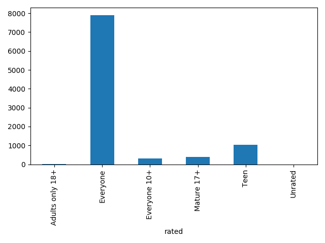

class: center, middle # Group 1 - CMSC 6950 - Google Play Store Analysis Khosh Raftar Nouri, Aida (akhoshraftar) Salcedo, Carlos (cdsalcedo) Sarker, Sourav (souravs) Yazdanpanah, Fatemeh (fyazdanpanah) --- # Project Objectives * To analyze the Play Store App data * To determine app trends * To compare the year to year application history * To visualize the which application category supports which version of OS * To inspect which month of the year, the applications got their last update most --- # Installation ```bash Project/ ├── checkfs.sh # Plan B - if download doesn't work ├── Data/ ├── makefile # For installation Method 2 ├── OrigData/ # Plan B - if download doesn't work │ ├── googleplaystore.csv │ ├── googleplaystore_user_reviews.csv │ └── license.txt ├── Pipfile # For installation Method 2 ├── Pipfile.lock # For installation Method 2 ├── README.md # Instructions for Installation └── requirements.txt # For installation Method 1 ``` --- # The makefile ```bash .PHONY: all newenv basesetup baseclean download kagglecheck bashrun all: newenv baseclean basesetup newenv: pip install --user pipenv pipenv install basesetup: baseclean pipenv run python3 jitter.py pipenv run python3 histograms.py -i ./Data/cleanData.csv -d pipenv run python3 post_processing.py baseclean: download pipenv run python3 cleandata.py -o ./Data/cleanData.csv -i ./Data/googleplaystore.csv download: pipenv run python3 download.py -u kagglecheck: /bin/bash kagglecheck.sh bashrun: /bin/bash checkfs.sh ``` --- # The Scripts 1. download.py == Downloads data directly from Kaggle 2. cleandata.py == Cleans the data so that it can be processed 3. histograms.py == Generates a preview of the Data 4. post_processing.py == Generates 5. jitter.py == Generates the jitter plots 6. test.py == Tests the download procedures --- # download.py ```bash usage: download.py [-h] [-u] [-o OUTPUT] This is a simple script to download Kaggle datasets. It is important to have a kaggle account for the script to work. optional arguments: -h, --help show this help message and exit -u, --uncompressed Downloads the compressed files from Kaggle -o OUTPUT, --output OUTPUT select the output directory for the files ``` --- # cleandata.py ```bash usage: cleandata.py [-h] [-a] [-i INPUT] [-o OUTPUT] This is a simple script to manually clean the data from the lava18/google- play-store-apps dataset from Kaggle. It will ONLY work with that data set. optional arguments: -h, --help show this help message and exit -a, --all Performs all the clean-up functions in this script -i INPUT, --input INPUT Select the input data file to be cleaned -o OUTPUT, --output OUTPUT Select the output directory and file name. By default, it stores a file in the current directoy as cleanData.csv Group 1 - CMSC6950 - Memorial University of Newfoundland ``` --- # histograms.py ```bash usage: histograms.py [-h] [-i INPUT] [-d] [-g] [-v | -q] [-s SPECIFIC | -a] IMPORTANT: Remember to run cleandata.py before running this script. It will not work otherwise without its running. This programs is designed to generate basic graphs with the cleandata comparing the number of samples. It is also recommended to use TkAgg matplotlib background to make a beautiful. optional arguments: -h, --help show this help message and exit -i INPUT, --input INPUT Select the input directory and file name. By default, it searches for cleanData.csv in the current directoy -d, --data Save the figure and its corresponding data -g, --graphs Enable this option to display the graphs after the figures have been processed -v, --verbose increases verbosity of the output -q, --quiet reduces verbosity of the output -s SPECIFIC, --specific SPECIFIC specify which graph you wish to regenerate. The options are: category, reviews, rating, size, installs, price, rated, lastUpdated, osVer, and summary. Using a different keyword, or not filling in an option, will not do anything. -a, --all same as simultaneously activating flags -v, -d, and -g. This option will override any other flags Group 1 - CMSC6950 - Memorial University of Newfoundland ``` --- # post_processing.py * Requires dataClean.py to be run first * Generates more advance data insights * Generates the Pie interactive graph * Other Graphs Generated: Box Plot, Mean Plot, Swarmplot, Two Heatmaps, Cat Plot and Count Plot. # jitter.py * Takes cleaned data from dataClean.py. * Generates interactive Jitter plot. --- # test.py 1. def testvalkey() == Confirms existance of Kaggle Key 2. def testvalkaggle() == tests kaggle API 3. def testJitter() == tests jitter.py 4. def testLicense() == tests download.py --- # Bonus * checkfs.sh == alternative to make * kagglecheck.sh == Generates a kaggle key * Jupyter Notebooks == used solely for testing purposes * cleaned_data-Copy1.ipynb * project.ipynb * Project_ver_1.0.ipynb --- # Summary --- # Category --- # Rated  --- # Rating --- # Min. Android Supported Version --- <object width="100%" height="100%" type="text/html" data="./jitter.html" border="1"> </object> --- * Apps for "Everyone 10+" users have higher consistency of getting reviews. * "Everyone 10+" has higher median values. * "Everyone" has a high outliers. --- --- --- <img src="./heatmap_1.png" alt="" id="slide_img8" width="90%" height="100%"> --- <object width="100%" height="100%" type="text/html" data="./pie.html" border="1" > </object> --- --- <object width="100%" height="100%" type="text/html" data="./average_size.html" border="1"> </object> --- --- --- <object width="100%" height="100%" type="text/html" data="./jitter2.html" border="1"> </object> --- --- --- # Contributions | Name | Worked on | | ------------- |:-------------:| | Aida | Latex, Presentation, README.md, jitter.py, post_processing.py | | Carlos | README.md, makefile, shell scripts, download.py, histograms.py, cleandata.py | | Sourav | Jupyter Notebooks to help with histograms.py and post_processing, and jitter.py | | Fatemeh | Latex, Presentation, README.md, post_processing.py | --- class: center, middle # Thank you